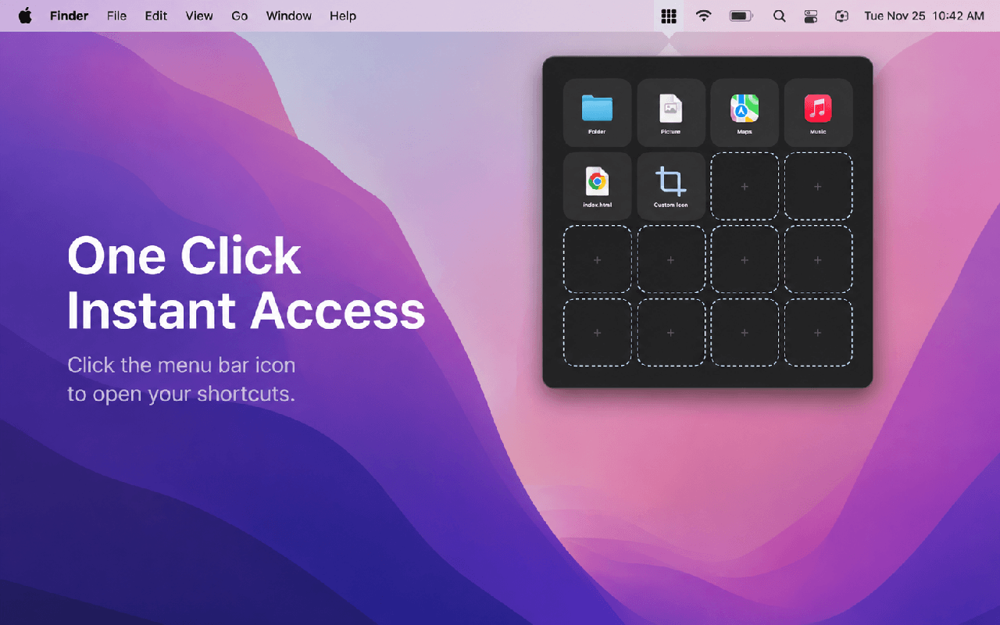
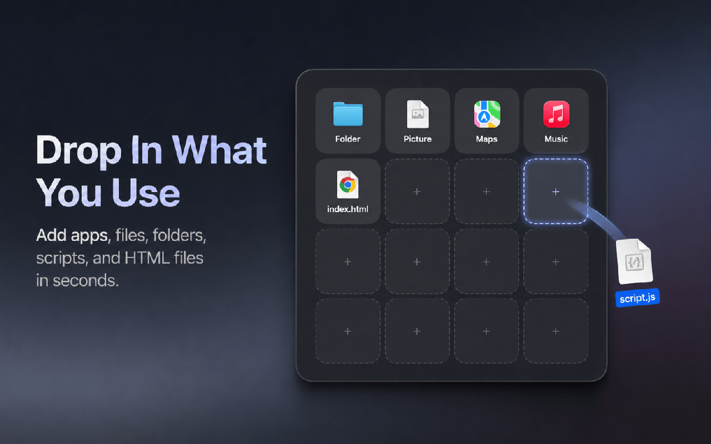
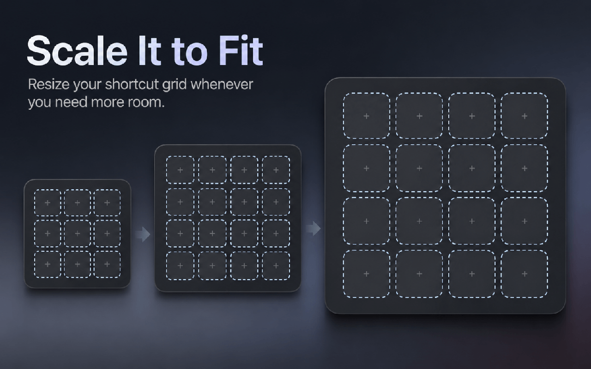
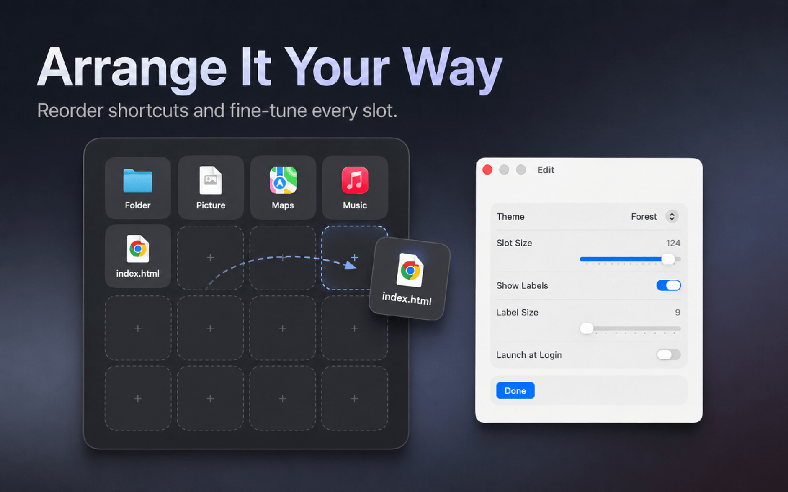
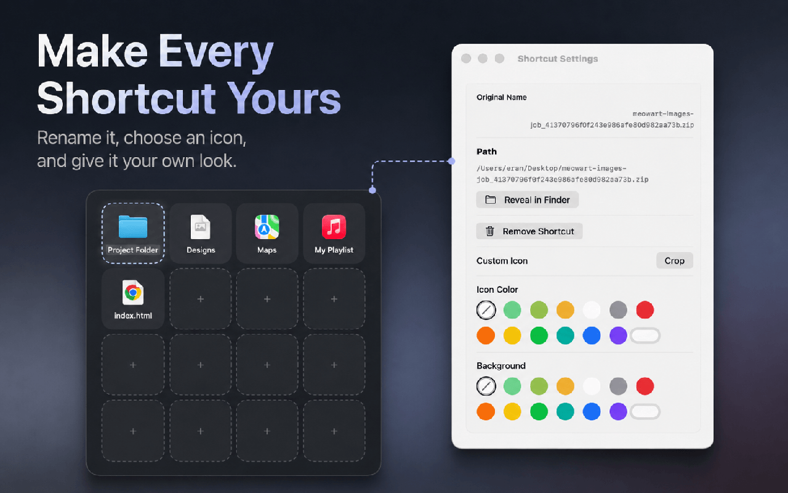

Drop in what you use
Drag local apps, files, folders, .command scripts, and .html files from Finder into an empty slot.
A personal launcher for macOS
DockLoom turns the apps, files, folders, scripts, and local pages you use most into a flexible shortcut grid—ready from the menu bar in one click.
Available exclusively for Mac on the App Store

What DockLoom is
DockLoom is a native macOS menu bar launcher built for people who want a personal shortcut surface instead of a fixed app catalog. Use it as a customizable alternative to a traditional Mac Apps Launcher or Launchpad-style workflow, then add the documents and folders that belong beside those apps.
Open DockLoom from the menu bar, launch a shortcut, and get back to what you were doing. The borderless grid can grow with your collection, shrink to stay out of the way, and keep every shortcut exactly where you placed it.
中文简介：DockLoom 是一款 macOS 原生菜单栏快捷启动器，可作为 Mac Apps Launcher 或 Launchpad 风格启动方式的个性化替代方案。除了 App，还能拖入文件、文件夹、命令脚本和本地 HTML 文件，并自由调整窗口、格子、名称、图标和排序。
Designed around your workflow
Drag local apps, files, folders, .command scripts, and .html files from Finder into an empty slot.
Drag the window edges or corners to create the shortcut grid that fits your collection and your screen.
Drag shortcuts into open slots or swap two occupied positions. DockLoom preserves the layout you choose.
Replace long or unclear file names with aliases that make sense in your personal launcher.
Use built-in custom icons, change icon and background colors, or return to the original target icon at any time.
Adjust slot size, label visibility, label size, and theme so the launcher feels compact or spacious.
See DockLoom in action




A focused alternative
DockLoom does not require an account and does not include advertising, analytics, tracking, or cloud sync. Shortcut references, aliases, visual settings, and preferences are stored locally.
Frequently asked questions
DockLoom is a native macOS menu bar launcher for apps, files, folders, command scripts, and local HTML files. It presents your shortcuts in a customizable, resizable grid.
Yes. DockLoom is designed to serve as a customizable Mac Apps Launcher alternative. It gives you direct control over grid size, shortcut position, labels, icons, and colors—and it can launch more than apps.
You can add existing local Mac apps, regular files, folders, .command scripts, and .html files by dragging them from Finder into an empty slot.
No. Aliases, icons, colors, positions, and other shortcut settings belong only to DockLoom. The app does not rename, move, rewrite, or delete the original target.
No. DockLoom stores its shortcut references and preferences locally on your Mac. It has no account system, cloud sync, advertising, analytics, or tracking, and it does not upload the contents of your shortcut targets.
DockLoom is available for macOS exclusively through the Mac App Store.
Keep the apps and files that matter in one flexible grid, one click from the menu bar.